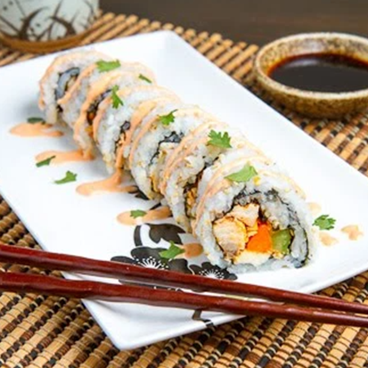

Buffalo Chicken Sushi

Ingredients
- 1 cup rice short grain rice (sushi rice)
- 2 cups water
- 1/4 cup rice wine vinegar
- 1 tablespoon sugar
- 1/2 teaspoon salt
- 4 sheets nori
- 1 cup cooked shredded chicken
- 1/4 cup hot sauce
- 2 ribs celery, cut into thin strips
- 2 carrots, peeled and cut into thin strips
- 1/2 cup blue cheese, crumbled
- 1/2 cup cheese tortilla chips, crumbled (optional)